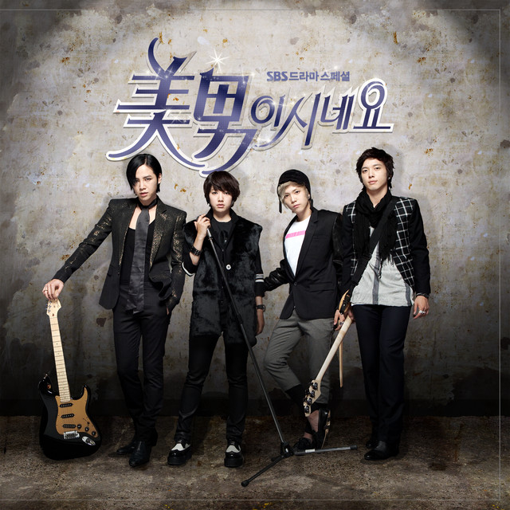
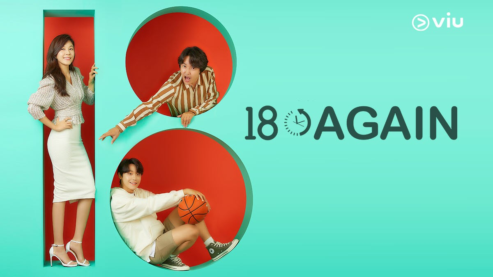
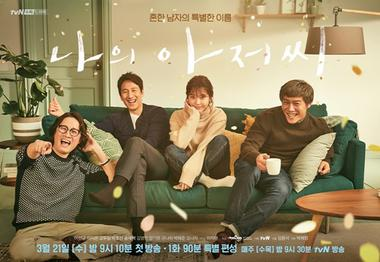

| |
|
|
KNRSYKRA PERSONAL WEBSITE |
|---|
HOBBY
If I need to explain about my hobby, I would say that my hobby is watching korean drama. It is not a shocking news when we heard one hobby is watching kdrama. I believe half of the world population shared the same hobby as mine. I began watching kdrama when I was 10 years old. My first kdrama is "You Are Beautiful" with their main casting was Park Shinhye and Jang Geun Seuk.
My personal rate is 6/10 for this kdrama as it holds special memory in my heart as I first watch it with my sister.

Figure: You Are Beautiful promotional poster
My next favorite kdrama is "18 Again". This a real tear-jerking drama about parenthood. Watching this make me appreciate my parents more as the casts act really well. Definitely need a box of tissue on every episode.
My personal rating is DEFINITELY 10/10. Will rewatch if I don't have any watchlist.

Figure: 18 Again promotional poster
Feel burnt out and emotional exhausted? You should try watching "My Mister".Stories involve with three middle-age sibling who's life is not that happy although their job pays well. One day, the male lead, Kang-hoon receives bribe and it was witnessed by his contract worker, Lee Ji-An. Since then, people began to pay attention towards Ji-An although she was merely a shadow before.
My personal rating is DEFINITELY 1000/10. Cried a river watching its final episode.

Figure: My Mister promotional poster